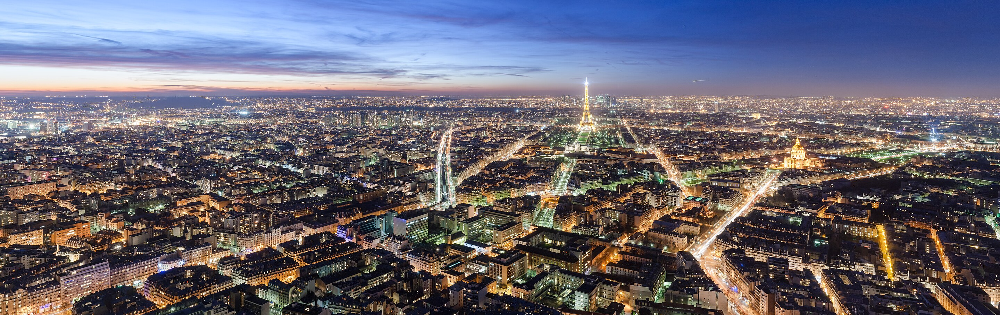
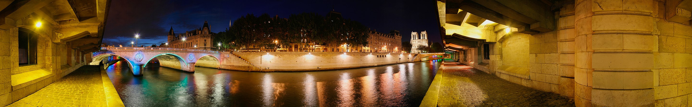

Parīze
Parīze franču: Paris; IPA:[paʁi] ir pilsēta valstī, Francijas galvaspilsēta un lielākā kā arī Ildefransas reģiona administratīvais centrs un viens no valsts departamentiem.
Parīze atrodas Sēnas upes krastos valsts ziemeļu daļā. Parīze ir valsts politiskais, biznesa un kultūras centrs.
Parīzes platība ir 105,4 km² (113. lielākā Francijas komūna).
Tajā dzīvo 2,20 miljoni iedzīvotāji, bet, ja pieskaita arī piepilsētas, tad iedzīvotāju skaits pārsniedz 10 miljonus. Savukārt Parīzes metropoles iedzīvotāju skaits pārsniedz 12,5 miljonus.
Līdz ar to tā ir viena no lielākajām Eiropas pilsētām.
Parīze ir viena no tūristu visapmeklētākajām pilsētām pasaulē. Tajā ir daudzi mākslas muzeji un vēsturiskas celtnes. Slavenākie objekti ir Eifeļatornis, Luvra un Triumfa arka. Kopš viduslaikiem
Parīze ir viena no Eiropas svarīgākajiem intelektuālajiem un mākslascentriem. Daudzas no Eiropas politiskajām, mākslas un kultūras parādībām ir dzimušas tieši Parīzē.
Parīze bija pirmā Rietumeiropas galvaspilsēta, kurā par pilsētas mērutika ievēlēts melnādains cilvēks.
Parīze ir UNESCO, Ekonomiskās sadarbības un attīstības organizācijas (OECD) un Svaru un mēru starptautiskā biroja (BIMP) mītnes vieta.
Etimoloģija
Parīzes nosaukums ir cēlies no gallu cilts parīziju nosaukuma, kuri savulaik apdzīvoja šo vietu. Kad Romas impērija pakļāva šo apvidu, viņi pilsētu nosauca par Lutēciju ( latīņu : Lutetia), bet Flāvija Juliāna valdīšanas laikā (360—363) pilsēta tika pārsaukta par Parīzi.
Parīze tiek saukta arī citos nosaukumos, piemēram, par "
La Ville-Lumière
kas tulkojumā nozīmē "Gaismas pilsēta
Vēsture
Parīzē Veicot arheoloģiskos izrakumus, ir datēts, ka jau ap 4200. gadu p.m.ē. apkaime ap Parīzi ir bijusi apdzīvota. Parīziju cilts, viena no ķeltu ciltīm, Sēnas krastos ir dzīvojuši ap 250. gadu p.m.ē.
Parīze tolaik bija neliels plūdu apdraudēts zvejnieku ciemats Sitē salā. To 55. gadā p.m.ē. iekaroja romieši. Romiešu apmetnes drīz uzplauka un izpletās Sēnas kreisajā krastā.
Viduslaikos pilsēta kļuva par reliģisko centru un te tika uzcelti daudzi arhitektūras šedevri, piemēram, Svētā kapela (Sainte-Chapelle). Parīze attīstījās arī kā izglītības citadele, un izcilā Sorbona piesaistīja daudzus Eiropas zinātniekus
Ģeogrāfija
Parīze atrodas Francijas ziemeļu daļā. Parīzes vēsturiskais centrs atrodas uz divām Sēnas upes salām. Tās ir Sitē sala ( Île de la Cité ) un Sentluija sala ( Île Saint-Louis).
Laika gaitā ap šīm salām pilsēta ir nevienmērīgi izpletusies abos Sēnas upes krastos.
Labajā krastā uz ziemeļiem Parīze aizņem aptuveni divas reizes lielāku teritoriju nekā kreisajā krastā uz dienvidiem.
Parīzes centrālā daļa no piepilsētām ir atdalīta ar apvedceļu, kurš franciski tiek saukts par Boulevard Périphérique. Savukārt kopš 1844. gadā Parīzes robežas sakrita ar Tjēra mūri ( enceinte de Thiers ), bet jau 1860. gadā pilsēta tika paplašināta, pievienojot tai apkārtējos ciemus vai daļu no tiem.
Lai nokļūtu uz Boulevard Périphérique apvedceļa, ir jādodas pa automaģistrālēm cauri tā sauktajiem Parīzes pilsētas vārtiem ( portes de Paris ).
Parīzē abos upes krastos ir vairāki vientuļi pakalni. Labajā krastā augstākā virsotne ir Monmartrs, kura augstākajā punktā (131 m) atrodas Senpjēra de Monmartra baznīca ( église Saint-Pierre de Montmartre ). Bez Monmartras vēl ir Belvilas kalns ( Belleville, 128,5 m), Ménilmontant (108 m), Buttes-Chaumont (103 m), Passy (71 m) un Chaillot (67 m). Kreisā krasta augstākie punkti ir Montparnasse (66 m), Butte-aux-Cailles (63 m) un Montagne Sainte-Geneviève (61 m).
Attālumi no Parīzes tiek mērīti, par atskaites punktu ņemot Dievmātes katedrāli.
Parīzes panorāmas skats naktī noMontparnasas torņa.
Hidrogrāfija
Caur Parīzi, metot lokus, no dienvidaustrumiem uz dienvidrietumiem plūst Sēna. Tai pāri ir uzbūvēti vairāk nekā 35 tilti.
Parīzes teritoriju šķērso arī divas citas ūdensteces: Bjevras ( Bièvre ) upe, kura ietek Parīzē no dienvidiem un mūsdienās ir gandrīz pilnībā zem zemes, un Senmartēna kanāls ( Canal Saint-Martin ), kuru atklāja 1825. gadā un ir 4,5 km garš.
Arī Senmartēna kanāls galvenokārt atrodas zem zemes, konkrēti, zemFaubourg-du-Temple ielas, un savieno Sēnu ar 108 km garo Urkas kanālu ( Canal de l'Ourcq ), kas Parīzē ieplūst no ziemeļaustrumiem.
Infrastruktūra
Parīzes tuvumā ir vairākas lidostas , no kurām lielākā ir Šarla de Golla lidosta. Tā atrodas aptuveni 25 km attālumā no Parīzes centra.
Kultūra
Parīze ir muzeju un galeriju pilsēta. Viens no slavenākajiem pasaules mākslas muzejiem ir Luvra.Tūristu iecienīts muzejs ir arī tā sauktais Tokijas muzejs ( Palais de Tokyo .)
Parīze tiek uzskatīta par pasaules modes galvaspilsētu.
ievērojamas vietas
- Bastīlijas cietoksnis (Bastille)
- Elizejas lauki (Avenue des Champs-Élysées) - Parīzes slavenākā iela.
- Eifeļa tornis (Tour Eiffel) - Parīzes simbols. "Pagaidu" tērauda tornis celts 1889. gadā pargodu Vispasaules izstādei
- Invalīdu nams (Hôtel des Invalides) - militārais muzejs, arhitektūras un vēstures piemineklis, militāranekropole.
- Konkordijas laukums (Hôtel des Invalides) - militārais muzejs, arhitektūras un vēstures piemineklis, militāranekropole.
- Latīņu kvartāls (Quartier Latin) ar Sorbonnu (Sorbonne) - Parīzes studentu rajons kopš viduslaikiem.
- Luvra (Musée du Louvre) - viens no slavenākajiem pasaules mākslas muzejiem.
- Orsē muzejs (Musée d'Orsay) - mākslas muzejs, vēstures piemineklis.
- Monmartrs (Montmartre) - vēsturisks mākslinieku rajons.
- Monmartras kapsēta (Cimetière de Montmartre)
- Parīzes Svētāssirds bazilika (La Basilique du Sacré Cœur de Montmartre)
- Mulenrūža (Moulin Rouge) - slavens kabarē.
- Panteons (Parīze) (Panthéon de Paris) - ievērojamu franču kapavieta.
- Parīzes Dievmāteskatedrāle (Notre Dame de Paris) - Parīzes galvenā baznīca.
- Triumfa arka (Parīze) (Arc de Triomphe) - 1806. gadā sākts un 1836. gadā pabeigts piemineklis Francijasmilitārajām uzvarām.
- Žorža Pompidū centrs (Centre Georges-Pompidou) - slavens modernās mākslas muzejs.
- Perlašēza kapsēta (Cimetière du Père-Lachaise) - viena no zināmākajām kapsētām pasaulē.
Sports
Parīzē divas reizes rīkotas vasaras olimpiskās spēles. Pirmās bija 1900. gada , bet otrās — 1924. gada vasaras olimpiskās spēles.
Lai gan Parīze ir viena no lielākajām pilsētām Eiropā un futbols ir viens no populārākajiem sporta veidiem Francijā, pilsētu valsts augstākajā futbola līgā Ligue 1 pārstāv tikai viens futbola klubs. Tas ir Paris Saint-Germain, kas desmit reizes ir izcīnījis Francijas čempiona nosaukumu (pēdējoreiz 2021.—2022. gada sezonā).
Parīzē ik gadu notiek Francijas Atklātais čempionāts tenisā, viens no četriem Grand Slam turnīriem.
Sadraudzības pilsētas
Kopš 1956. gada 9. aprīļa Parīzei ir ekskluzīvs un abpusējs sadraudzības statuss tikai ar vienu pilsētu.
- Roma (1956), Itālija
Tikai Parīze ir Romas cienīga; tikai Roma ir Parīzes cienīga.